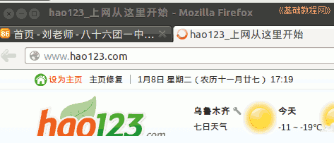

2011-2012 第一学期七年级电脑操作教学设计
作者：TeliuTe 来源：基础教程网
二十二、学会浏览网站 返回目录 下一课
（一）教学设计
1、学习目标：学会浏览网站
2、注意事项：日志输一半，笔记抄完整
3、教学过程：
1）教师准备学案和板书；
2）学生整队进入，开机抄黑板上笔记；
3）教师讲解板书演示操作；
4）学生打指法、日志、完成操作；
5）教师打勾记录学生指法成绩，检查日志和操作；
注：学生抄完笔记就开始打指法、日志，老师讲完后再继续完成；
（二）板书设计(学生笔记)
第22课 学会浏览网站
1.网站是有许多网页组成的服务器
2.用网址访问在地址栏输入网址
3.用链接访问蓝色下划线手行
4.用搜索来访问谷歌和百度
5.实用程序访问如 qq网游
6.上网前要先联网
1）点最上面“编辑-首选项-高级-网络-设置”
2）点“手动配置代理-HTTP代理”
3）输入 192.168.1.252 端口 808
4）不使用代理，加上逗号 ,192.168.1.250
5）点“确定-关闭”
操作图示：

（三）课后记 2012-11-23 18:35
--
测试squid3费了许多时间，还没查出来是什么缘故
可能是允许的网址出错，用默认的全部也可以
--
设置缓存文件夹老是出错，干脆用原来默认的好了
明天再继续查看原因
--
检查的时候，要求把hao123调出来放在标签里
QQ的程序先不讲了，容易干扰，而且容易卡机子
--
三种上网铁方法，用起来可能还要多熟悉才行
开始进入网络的学习，学书签和保存网页等
--
学生爱玩游戏，一定要刹住
但不一定要生气，容易乱了方寸
--
那么多做的好的学生，只一两个不好的
应该高兴才是，追求完美也是问题
--
该训的训，训完也就过去了
已经得到了惩罚，效果不好再想别的方法
返回目录 下一课
本教程由86团学校TeliuTe制作|著作权所有
基础教程网：http://teliute.org/
美丽的校园……
转载和引用本站内容，请保留作者和本站链接。